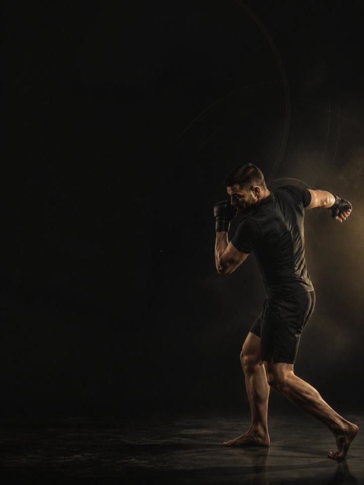

Striking · Base
Build the force behind the shot, and the shoulders, calves and neck that carry the round.
- Built forboxing, Muay Thai and MMA athletes
- Training days3 gym days a week around your sport, 2 in heavy sport weeks
- Session length50–60 minutes
- Equipmentfull gym, plus a med ball, bands and a pull-up bar
- Formatmobile PDF, every exercise linked to a demo video
The store opens soon. For now, Buy opens an Instagram message and you receive the PDF there.
Who it's for
Strikers who train their sport hard and want the force it never builds. Rounds, pads, bags and running produce a huge amount of conditioning and almost no maximal strength. A punch or a kick is a rotation launched from the floor, limited by how much force the legs and hips can put into the ground. Power you never built cannot be found in another round of pads.
On top of that, the block trains the three things a striker spends every session and rebuilds in none: the shoulders, which is why the hands drop late; the calves and Achilles, from hours on the balls of the feet; and the neck, which takes impact whether you have prepared it or not. All of it heavy, brief, and built around your sport instead of on top of it.
Where it sits in the year: Block 1 of 4. Base, Build, Compete, Restore, run in order. Base comes first. Run it away from camp, when sparring is light and no fight is booked.
Your week
Three gym days, arranged around your sport. Lift on your lighter sessions, and never heavy legs before hard sparring.
Off-season, 3 gym days
| Sun | Mon | Tue | Wed | Thu | Fri | Sat |
|---|---|---|---|---|---|---|
| Day 1 | Sport | Day 2 | Sport | Day 3 | Rest | Rest |
In-season, 2 gym days
| Sun | Mon | Tue | Wed | Thu | Fri | Sat |
|---|---|---|---|---|---|---|
| Day 1 | Sport | Day 2 | Rest | Sport | Match | Rest |
In heavy sport weeks, do Day 1 and Day 2 only. Keep the neck, calf and shoulder work every week regardless.
Every session runs the same way:
- Warm-up, 8–10 min. The same sequence each time, plus wrists and neck. Never skipped, never rushed.
- Elastic and power, 12–15 min. Med-ball throws, bounds and footwork, fresh and sharp, with full recovery between sets.
- Strength, 20–25 min. The heavy compound lifts with long rests. This is force, not another round.
- Shoulders, neck and calves, 10 min. Last, and never cut.
Power before fatigue, strength before assistance, and the shoulder, neck and calf work at the end so it survives a rushed session. Nothing in this block is trained to exhaustion. Your sport already does that better than any gym session could.
How the 12 weeks progress
Three phases of four weeks each. Striking force is a whole-body sequence: ground reaction, hip rotation, trunk transfer, arm last. The biggest contributions come from the segments furthest from the glove, which is why heavy lower-body strength and rotational power carry over to striking and more bag rounds do not. Load climbs across the block, then converts into speed, then has to hold up when you are tired. Rotational power, shoulders, calves and neck appear in every session.
| Weeks 1–4 | Weeks 5–8 | Weeks 9–12 | |
|---|---|---|---|
| Phase | Structural capacity | Rate of force | Repeat-effort capacity |
| Goal | General heavy strength, with neck, wrist and shoulder work from day one. Neck work starts light. | Loads climb, reps fall, and the power work gets sharper and more specific | The same power, asked for when you are tired, because that is when fights are decided |
| Working sets per week | 58 | 66 | 62 |
| Average effort | RPE 7.0, about 3 reps in reserve | RPE 7.9, about 2 reps in reserve | RPE 7.9, about 2 reps in reserve |
| Landings per week | 115 | 96 | 113 |
| Throws per week | 62 | 58 | 87 |
The block at a glance
Working sets per week, by what they train. The dashed line is effort.
Where this block sits in the training year
Run the four blocks in order and they make a full training year.
RPE is a 1–10 rating of how hard a set feels. Reps in reserve is how many more good reps you could have done, so about 2 means 2 reps left in the tank.
Deload weeks: weeks 6 and 12 are lighter. You halve the sets, keep the loads, and retest fresh.
The rules that make it work
- The gym is not another round. Heavy loads, low reps, long rests. Your sport supplies the conditioning. What it cannot supply is maximal force.
- Power first, while you are fresh. Throws, bounds and hops open the session. Done tired, they are just fatigue with extra impact and none of the speed.
- Shoulders, calves and neck every week. The three tissues a striker spends daily and rebuilds never. They sit at the end so they survive a rushed session.
- Neck work is gentle, self-resisted, and stops at any symptom. Pain, dizziness, headache or anything travelling down an arm ends the exercise and means seeing a clinician. No sparring until it is cleared.
- Nothing heavy in fight week. Inside seven days, halve it. Inside 72 hours, nothing but movement. Strength built twelve weeks ago is what shows up on the night.
- Use a jump number as a fatigue test. Three standing broad jumps at the start of Day 1 each week, best one kept. More than 10% below your own rolling average means reduce that day: drop the power work and one set from each lift.
- Count landings, not just sets. Every jump, hop, bound and drop is a landing your tendons pay for, warm-up hops included. Med-ball throws, sprints and split steps are not landings. Keep the week under about 120 landings in Base, with sport practice on top.
Terms
- Training year (macrocycle): four blocks in order (Base, Build, Compete, Restore), about 48 weeks.
- Block: 12 weeks. This program. One block develops one set of qualities to a set standard.
- Phase (mesocycle): 4 weeks. Each one targets one quality. Four weeks is a choice, not a rule. The length follows the goal.
- Training week (microcycle): where effort climbs, sets are added and the deload lands.
How you'll measure progress
The weekly broad jump tracks fatigue, and you retest fresh in the deload weeks, 6 and 12. Body weight is tracked weekly for one reason only: so you know where you actually are, well before anyone starts talking about making weight.
What good progress looks like
- Weeks 1–4: strength climbs quickly, because most strikers have never trained it properly. Expect the calf and shoulder numbers to be humbling.
- Weeks 5–8: throw distance moves fast and the side-to-side gap starts to close.
- Weeks 9–12: the qualities show up where they matter: hands up later, feet still moving in the last round.
Respect the week
Count everything: fights, sport training, gym and sleep. Sudden jumps in weekly workload are the most reliable predictor of injury in amateur sport. In a heavy sport week, drop a gym session or cut the power work, never both the sport and the recovery. Protect 7–9 hours of sleep. It is the most powerful performance tool you have, and the cheapest.
The science
Every program in the library is built on published research, and how strong that research is gets stated, not implied. Where the evidence is limited, the page says so.
| Finding | Source | What it does not show |
|---|---|---|
| Strength training cuts sports injuries to under a third of the control rate. Stretching does not reduce them. | Lauersen, Bertelsen & Andersen, British Journal of Sports Medicine 2014. Meta-analysis of 25 randomised controlled trials, 26,610 participants. PMID 24100287 | Risk ratio 0.32 for strength training and 0.96 for stretching. The trials varied a lot, and dose was not standardised. |
| Every sensible prescription beats not training. Heavier loads rank highest for strength. Multiple sets rank highest for muscle size. | Currier, McLeod, Banfield et al., British Journal of Sports Medicine 2023. Network meta-analysis, 178 strength and 119 hypertrophy studies. PMID 37414459 | The differences between prescriptions were small, and all of them worked. |
What's next
After 12 weeks:
- Next block in the year: Striking · Build
- One area needs work: the Corrective series
Before you buy: get cleared first if
- You have chest pain, unusual breathlessness, palpitations or dizziness with exertion.
- You have uncontrolled high blood pressure, a known heart condition, or recent surgery.
- You are pregnant or recently post-partum. Get clearance and a tailored program first.
- You have sharp joint pain in one spot that won't settle. Start with the matching AXIS corrective program.
This program is general fitness guidance. It does not replace a medical assessment.
The store opens soon. For now, Buy opens an Instagram message and you receive the PDF there.